Control Circuit 2026 › Tutorial › Chapter 9
The Border is a single, project wide template made up of graphics, images and dynamically populated text that is common to every Sheet in the circuit. It can carry a company logo, title block information, and all the lines and formatting that make your drawings look professional and well organised.
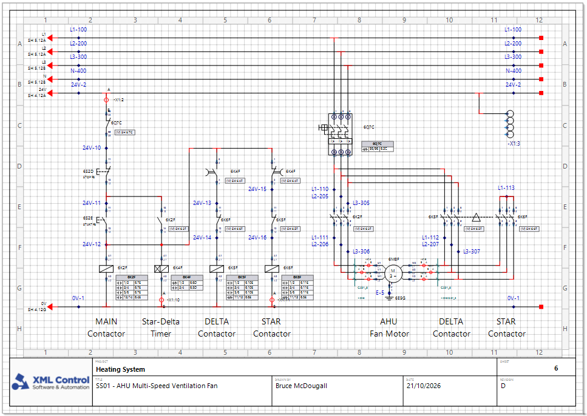
The Border Manager lets you create new Borders and modify existing ones, using an integrated XML text editor and a WYSIWYG style editor side by side. That gives you granular control over the position of every graphic and text field.
Control Circuit ships with some standard Borders. You can use them as they are, or readily modify them and save the result as your own custom Border.
In this chapter we will select a Border for a project, then customise one to show off the tools available.
There are two ways to choose the Border for a project.
The Standards & defaults page has a Selected border section where you can pick one of the common sizes, or choose More… to browse them all.
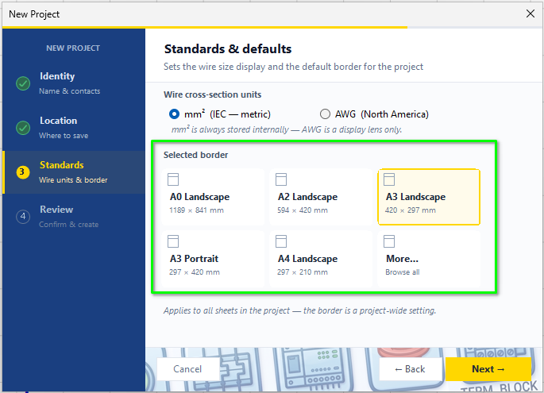
Choose Project › Project Properties…, open the Drawing tab, and pick from the drop down list.
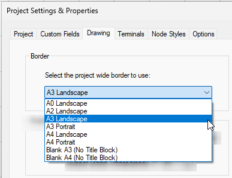
Choose Tools › Manage Borders…
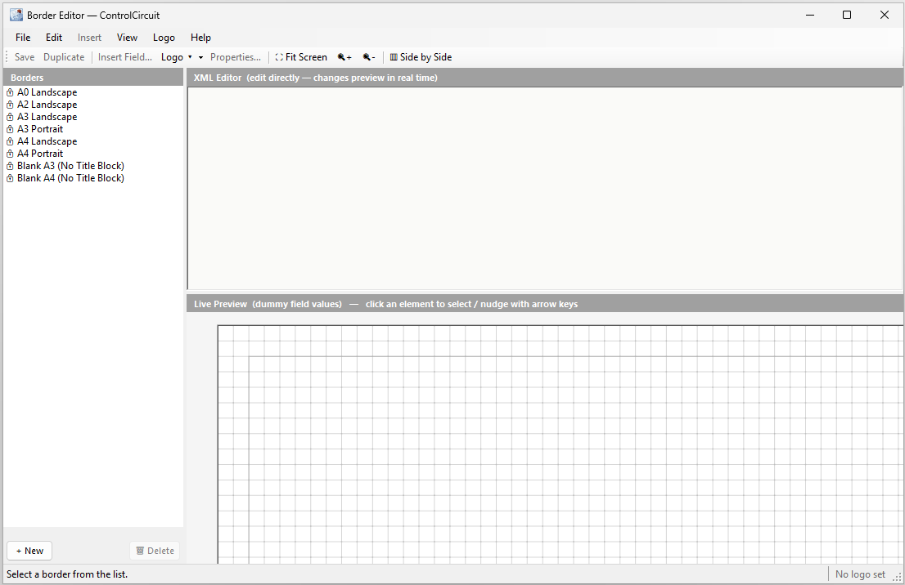
The shipped Borders are listed on the left. They all carry a padlock, which means they can be used as sources for your own customisation but cannot be altered themselves. You can of course create a Border from scratch, but why would you? Use a template!
Click A3 Landscape in the list.
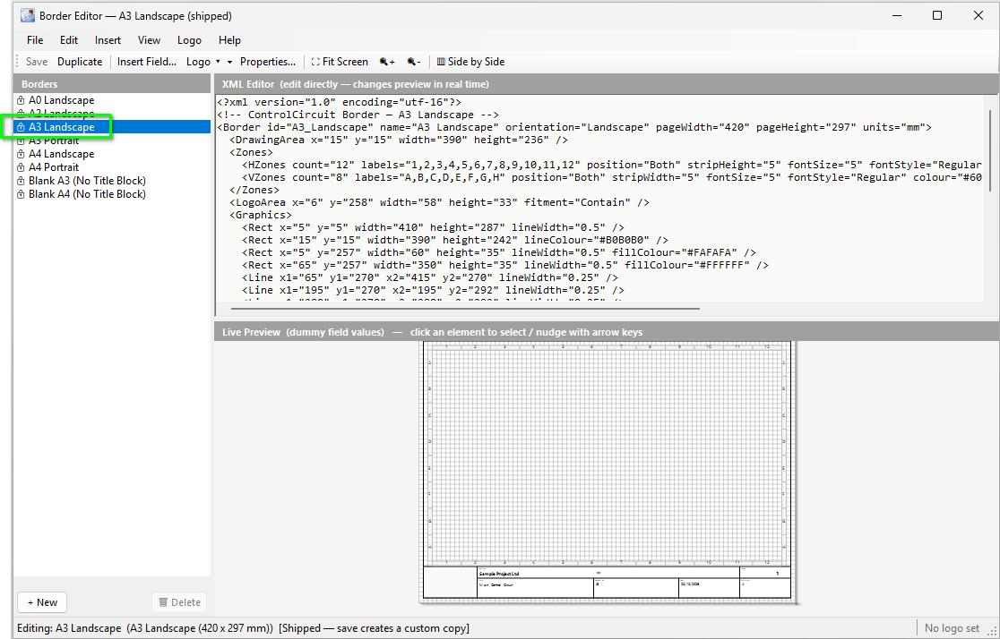
The top right pane is the XML Editor: the plain text XML that describes the Border layout. The bottom right pane is the Live Preview: the visual (WYSIWYG) render of that very same text. They are two editors pointing at the same Border, so edit one and the other updates.
As an example, click into the Zones text in the XML Editor and the Zone strips are selected in the Live Preview. You can select any element how you like, and you can edit any element how you like too: in text, or with the mouse and arrow keys.
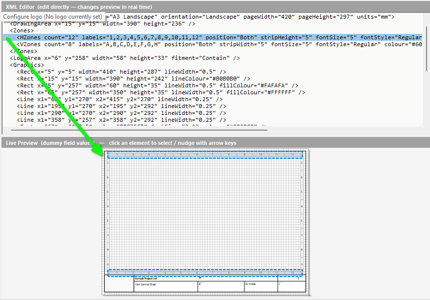
For moving shapes like lines and rectangles the visual editor is probably more convenient. For changing text values the XML editor may serve you better. You have the choice.
As with the main canvas in the circuit editor, you can use the common mouse features to pan and zoom the Live Preview.
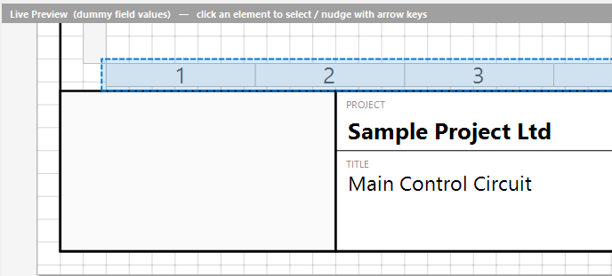
You can also zoom the XML Editor to change its font size.
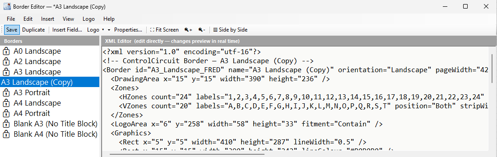
Selecting a rectangle in the Live Preview selects the matching XML in the text editor. Use the arrow keys to nudge it around and the new co-ordinates update in the text automatically.
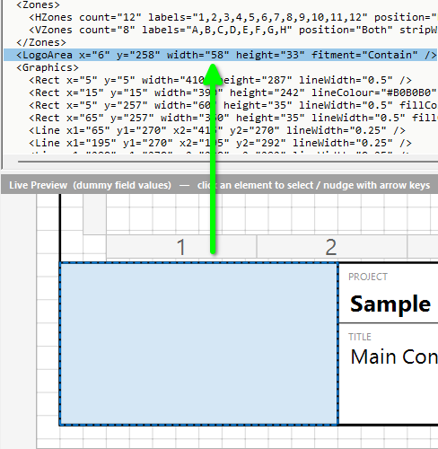
As it happens, this particular rectangle has a special function: it is the Logo Area. If you want to put a company logo on a Border, this is the built in object for the purpose. We will come back to it.
A shipped Border is locked, so first let us create a custom one that we can actually edit.
With A3 Landscape still selected, tap Duplicate on the toolbar.
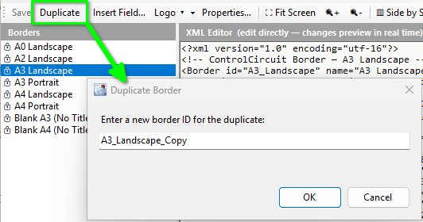
The dialog asks for a new Border ID. This is the unique ID of the Border, rather like a filename. Give it something useful and press OK. I named mine A3_Landscape_FRED. What shows in the list is the display name, which at this point is still “A3 Landscape (Copy)”. We will change that next.
Right-click the new Border in the list and choose Properties & Page Setup…
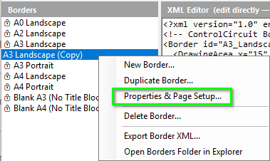
From here we can edit everything to do with our custom Border.
On the General & Page Size tab we can change the Display Name if required, plus the page dimensions and orientation.
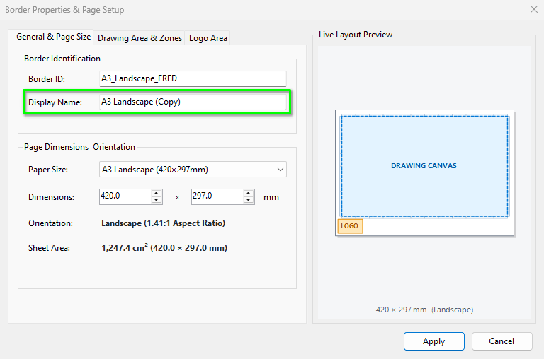
The Drawing Area & Zones tab holds the usable drawing area and the all important Grid Reference Zones.
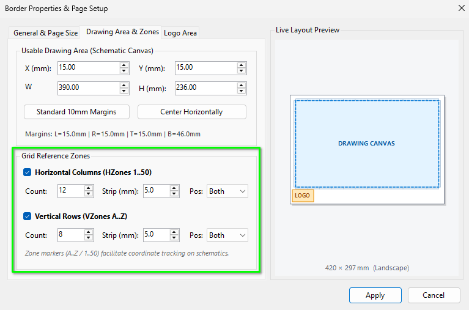
These are the actual values that the Auto Numbering engine uses to build the grid reference part of symbol names, on the circuit Sheets, when Auto Numbering by grid is required (see Chapter 7). You may set up to 50 Horizontal Zones and up to 26 Vertical Zones.
When you change these and press Apply, the Zones in the XML are updated too. You can also edit the values directly in the XML for the same result.
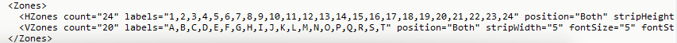
count values are accurately reflected in the list of text values supplied in labels, or strange things will happen!The Logo Area tab has various options, including whether to use the Logo Area at all. Bear in mind you can use <Image /> placeholders as an alternative.
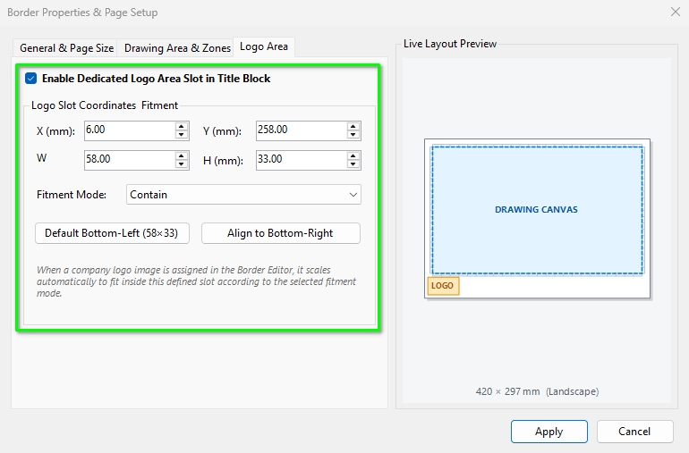
To actually add your logo, choose Logo › Set Logo… from the toolbar. A dialog opens so you can browse to a suitable image file. To remove the logo, choose Logo › Clear Logo.
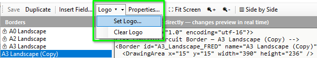
As mentioned, extra images can be added with the <Image /> element, placed inside the <Graphics> block. For example:
<Image x="6" y="258" width="58" height="33" src="logo.png" fitment="Contain" />
The src is looked for beside the Border’s own XML file first, then as a full path, so an image kept beside the Border travels with it. fitment is Contain, Cover, Stretch or Centre.
To populate project specific values into the title block (or any other area) we use Fields. A Field’s name corresponds directly to a project wide value. The Fields are found as a block of elements at the bottom of the XML text.
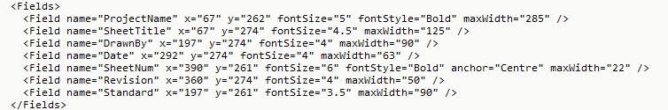
To move a Field, or change its font size, simply edit the element’s XML and the preview updates live. To cycle through all the elements of the Border, Fields included, put the caret in the text of any element and its graphic highlights. Now move the caret up or down with the arrow keys and the highlight follows along.
Suppose we want to add a new one? There are tools for that. From the toolbar tap Insert Field…, then scroll to (or filter for) the token you need and press Insert Token.
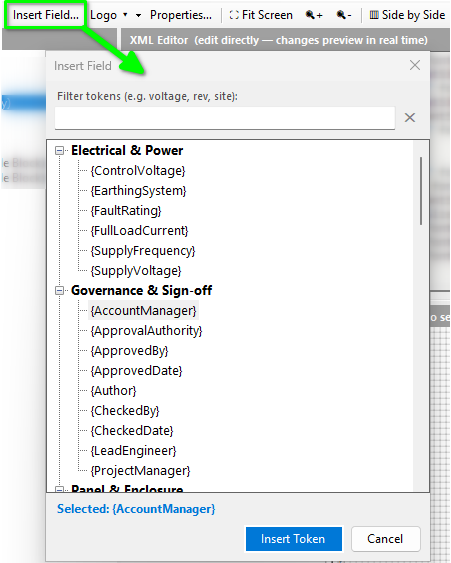
New Fields are always added after the last Field in the list, wherever the caret is. The new element appears in the Fields block and its graphic appears on the Border.
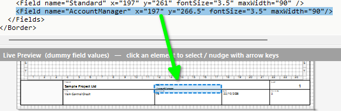
To remove a Field, delete its element from the XML text.
There is another way to add Fields, covered in the next part.
In the Border Manager, choose Help › Border Template & Fields Reference… to open a resource to assist you.
The Data-Bound Fields tab lists every Field available in the project, together with its current actual value.
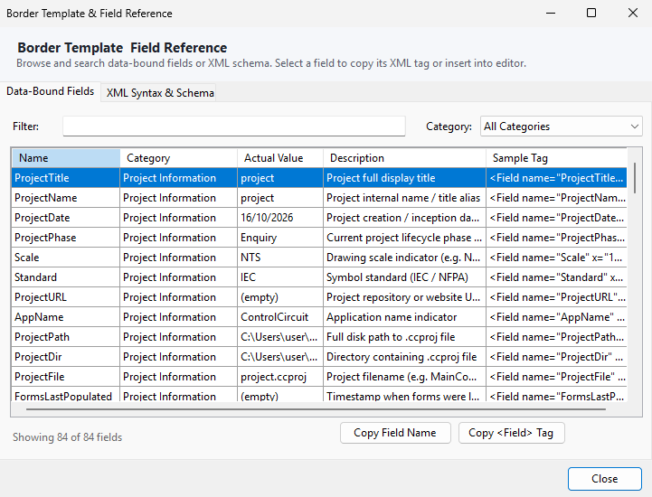
Double-click any row to insert the full Field element into the Border you are editing. Or use Copy <Field> Tag to put it on the Windows Clipboard, for example:
<Field name="ProjectTitle" x="10" y="10" fontSize="5.0" anchor="Left" />
The copy options matter when you are rolling your own Border templates outside of the editor.
For that purpose, the XML Syntax & Schema tab is a reference for creating your own Borders outside of this editor.
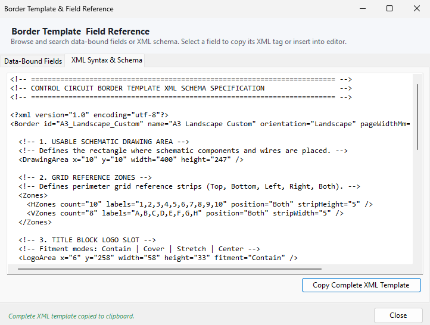
Press Copy Complete XML Template, paste it into a text editor, then use the copy buttons on the previous tab to collect the Field elements you would like to include.
That completes the introduction to Border templates and the Border Manager. Control Circuit supports Borders up to A0 in size, though most folks will be using A3, possibly A4, so that is the extent of the shipped templates for now. As you have seen, the tools make it easy to create your own custom templates as you need them.
In the final chapter we turn to the Publisher Tools: the Web Portal, Smart PDF, DXF Portfolio and Symbol Library PDF, where your finished Border and Sheets are put to work.